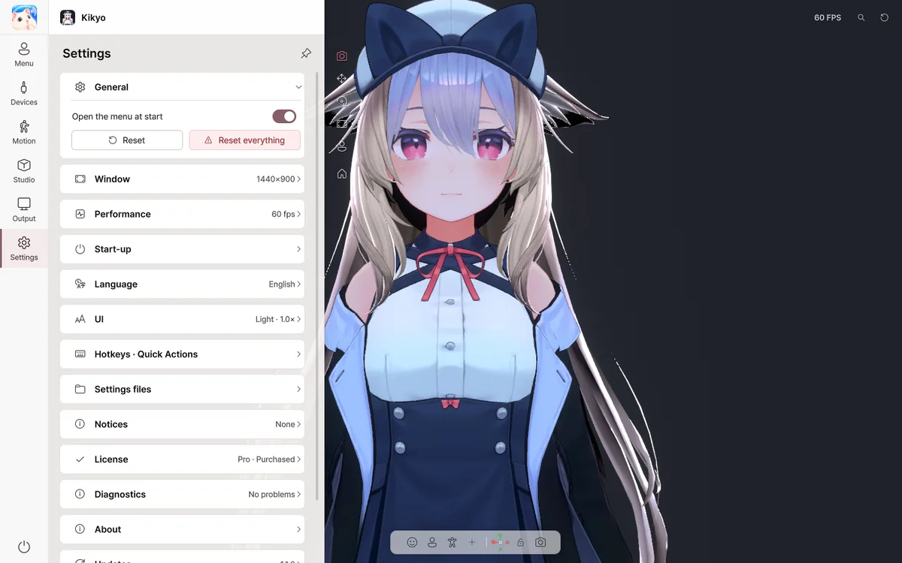

12. Troubleshooting
diagnosis by symptom

| Symptom | Steps to check |
|---|---|
| OBS has no Spout2 Capture | Close OBS, install the official OBS Spout2 plugin, restart OBS, then add Spout2 Capture. Re-select a sender if its name changed. |
| OBS has no NDI Source | Install DistroAV and the required NDI Runtime; restart OBS and remove conflicts with older OBS-NDI. NDI is available in Basic. |
| NDI feed is missing or black | Check Avatar Live NDI on → connection between PCs → firewall → NDI Tools Studio Monitor → source name and alpha handling. Guest Wi-Fi client isolation can block discovery. |
| Black backdrop in Spout2 | Use Transparent studio background and enable alpha output/compositing (Composite with alpha) in OBS's receiver plugin. Ordinary window capture is different. |
| Virtual camera Install does nothing | Registration may need Windows admin rights. Restart the app, inspect VirtualCamera/Install.bat, then restart Discord/Zoom and select Avatar Live Camera. |
| Remote session only works on local network | Verify server on, compatibility, default 47700, router forwarding for both TCP and UDP, Windows firewall, actual public WAN IP rather than CGNAT, and test from another network. |
| Friend appears as a stand-in avatar | Verify Send my avatar data consent and the asset's permission for temporary transfer, or install an owned legal VRM in the local Vrm folder and use Find again. Do not extract another person's files. |
| Studio camera orbits unexpectedly | See target rotation vs aim. Position binding Lock to target does not aim the lens at the face. Combine with Straight at target or Framed on screen. |
| iPhone connected but face frozen | Wait about 3 seconds after first valid face detection for calibration, check fresh tracking values, AFK settings and source reconnection. A connection alone is not fresh motion. |
| Webcam arms twist | Compare Legacy versus Dynamic arm mode, turn off experimental hand-depth estimation, and review excess smoothing. |
| SteamVR tracking is displaced | Verify tracking and calibration within SteamVR first; then reassign Avatar Live's trackers/body parts and calibrate again. |
| Recording/multiview is slow | Reduce independent Spout2 senders, multiview grid/update cost, volumetric/HBAO, output resolution and FPS one by one while watching OBS. |
If unresolved, send a report from Settings → Diagnostics → Send error report, including exact reproduction steps, tracking devices, avatar type, version (/) and the last setting changed. Sending is user initiated, not automatic. See the Output and remote session guide.
For bugs or problems that aren't solved, please let us know with Settings › Diagnostics › Send an error report, and for features or improvements you need, with Settings › About › Send a suggestion.
Start-up · Installation
| Symptom | Solution |
|---|---|
| "Windows protected your PC" window | More info → Run anyway |
| "Avatar Live's files have been changed" | Please reinstall from the original you downloaded from BOOTH. Your avatars and settings are kept. |
| It doesn't start smoothly | Launch while holding Shift for a safe start |
Avatar
| Symptom | Solution |
|---|---|
| Some parts look pink | Check that the avatar uploads to VRChat normally, then export it again |
| The avatar isn't visible | Double-click an empty spot in the view |
| The pose is stuck or the hair is tangled | ⟲ at the top |
| Avatar sound effects aren't heard | Avatar sound effects are not played. |
Webcam · Face
| Symptom | Solution |
|---|---|
| The camera doesn't turn on | Check whether another app is using the camera |
| Expressions come out too small or too large | Run Automatic face setup again, or use Face adjustment |
| The avatar looks to the side | Recenter |
| Winks don't work | Set the blink mode to Independent |
| The PC feels slow | Set the tracking quality to Balanced or Eco |
| Hands · fingers jitter | Raise Devices › Tracking sources › Hand steadiness |
| The avatar doesn't move | In Devices › Tracking sources, check that no part's source is set to a device you aren't using (such as VMC) |
| The pose received over VMC is off | T-pose or Align in VMC settings |
Microphone
| Symptom | Solution |
|---|---|
| "No signal" | Allow desktop apps in Windows Settings › Privacy › Microphone |
| Noise moves the mouth | Detect background noise |
| The mouth moves too little | Voice calibration |
Output · Screen share
| Symptom | Solution |
|---|---|
| No Spout2 source in OBS | Install the Spout2 plugin in OBS |
| The background looks black in OBS | Set the background to Transparent and choose Composite with alpha in OBS |
| Not in the Discord list | Turn on Screen share, then check the Applications tab |
| The game shows up black | Switch the game to windowed mode |
| "Avatar Live Basic" text | This is the Basic watermark. It isn't shown in Pro. |
Common issues after 1.1.5
| Symptom | Fix |
|---|---|
| Tracking loss never activates the AFK pose | Check the wait/transition values in Motion › Body and whether an idle pose is assigned |
| Winks are mirrored incorrectly on iPhone | Update to at least 1.1.4 and check Mirror |
| Arms do not fall back to the desk with iPhone only | Check Motion › Hands · Desk and arm tracking sources; full-body input requires webcam or VMC |
| Arms jitter when reaching forward | Turn OFF experimental hand-depth estimation and check webcam calibration |
| A setting is hard to find | Search AFK, Mirror, Spout2 or Language using the upper-right magnifying glass |
| A bug is difficult to explain | Use Settings › Diagnostics › Send error report with reproduction steps and logs |
Supported features
| Details | |
|---|---|
| ✅ VRChat avatars | Expressions menu, animators, PhysBones, Contacts, Constraints, Eye Look, LipSync |
| ✅ Creation tools | Avatars that use NDMF · Modular Avatar · VRCFury |
| ✅ Shaders | Poiyomi, lilToon and others |
| ✅ Face | Follows the avatar's setup: VRCFaceTracking, 52 ARKit shape keys (Perfect Sync), MMD eye morphs |
| ✅ Tracking | Webcam (face · arms · hands · fingers), iPhone (iFacialMocap · FaceMotion3D), VMC (per part: arms · hands · fingers · body · head · eyes) |
| 🧪 Experimental features | Ultraleap, OSC, VMC output, camera detection of the tongue and cheeks |
| ⚠️ Not supported | Avatar sound effects, AudioLink, mirror detection, VRM files, Live2D, macOS · Linux |
We've confirmed webcam (including full body and finger joints), iPhone and VMC input with real equipment. We expect the experimental features to work properly, but we haven't yet been able to test them with every device and app in the developer's environment, so they're marked experimental in the app. If you try them and something goes wrong, please let us know with Send an error report.
Planned support
- Loading VRM models (.vrm, VRM 0.x / 1.0) and playing .vrma animations
- Stronger Perfect Sync: mapping that links shape keys directly, face calibration for each webcam · iPhone, and a tool to check the 52 expressions one by one
- More phone face apps: VTube Studio (iPhone), MeowFace (Android)
- Conveniences: automatic refresh when you export the avatar again, lower FPS when there's nothing to do
※ Planned features and their timing may change.
Frequently asked questions
Do I need a VRChat account? No, you don't. Avatar Live does not communicate with VRChat.
Can I use it for streaming? For streaming, publishing videos and commercial use, please use Pro. Private Discord sharing with friends is fine with Basic, too.
Is my keyboard input recorded? No, it isn't. Desk hand motion does not save or send the characters you type.
Can I give my avatar file to other people? Please follow the terms of use of the avatar and outfit creators.